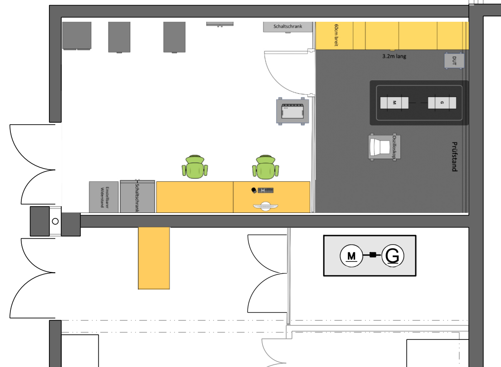
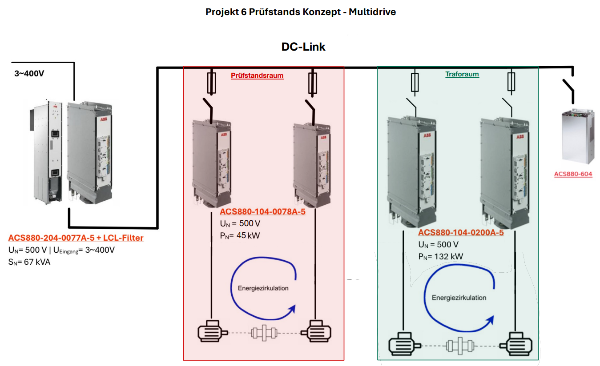

Bachelorarbeit 2026 · FHNW · Elektro- und Informationstechnik
100-kW-Prüfstand für elektrische Antriebssysteme
Entwicklung eines modularen 100-kW-Prüfstands für elektrische Antriebssysteme. Ein gemeinsamer DC-Zwischenkreis ermöglicht die Energiezirkulation zwischen Prüf- und Lastmaschine, sodass das Netz im stationären Betrieb nur die Systemverluste bereitstellen muss.
Projekt auf einen Blick
100 kW
Prüfleistung
2x2
mechanisch gekoppelte Maschinen
400 V
Netzanschluss
DC-Link
Energiezirkulation
Prüfstandskonzept


Quellen des Posters
- Hintergrundbild: Eigene Darstellung, erstellt mit Unterstützung eines KI-basierten Bildgenerierungswerkzeugs.
- Technische Symbole und Grafiken: Eigene Darstellungen.
- Symbol Dreiphasennetz: Icon von Flaticon. Quelle öffnen
Poster
Das Poster zur Bachelorarbeit kann hier als PDF geöffnet und heruntergeladen werden.
Poster herunterladen (PDF)Projektbeteiligte
Diplomand
Erigon Fejzulahi
Elektro- und Informationstechnik
Betreuung
Ishan Pendharkar
Tobias Strittmatter
Auftraggeber
Institut für Elektrische Energietechnik (IEE)
FHNW